114年分科-數學詳解
第 壹 部 分 、 選 擇 （ 填 ） 題
一、單選題( 1 ~ 3 題)
1.
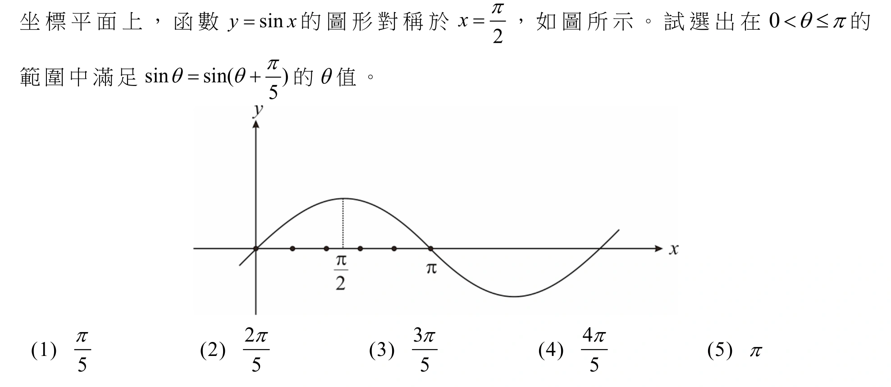
答案
(2)
詳解
【法一】作圖如下：圖形左移 \(\frac{\pi}{5}\) 後，與原圖的交點
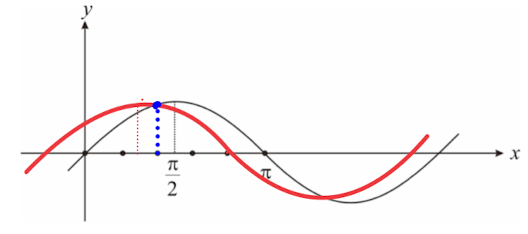
【法二】\(\sin \theta =
\sin(\pi-\theta)\)
\(\Rightarrow
\sin(\theta+\frac{\pi}{5})=\sin(\pi-\theta)\)
\(\Rightarrow
\theta+\frac{\pi}{5}=\pi-\theta\)
\(\Rightarrow
2\theta=\frac{4\pi}{5}\)
\(\Rightarrow
\theta=\frac{2\pi}{5}\)
(1) \(\sin(\frac{\pi}{5})\neq \sin(\frac{2\pi}{5})\)
(3) \(\sin(\frac{3\pi}{5})\neq
\sin(\frac{4\pi}{5})\)
(4) \(\sin(\frac{4\pi}{5})\neq
\sin(\pi)\)
(5) \(\sin(\pi)\neq
\sin(\frac{6\pi}{5})\)
2.
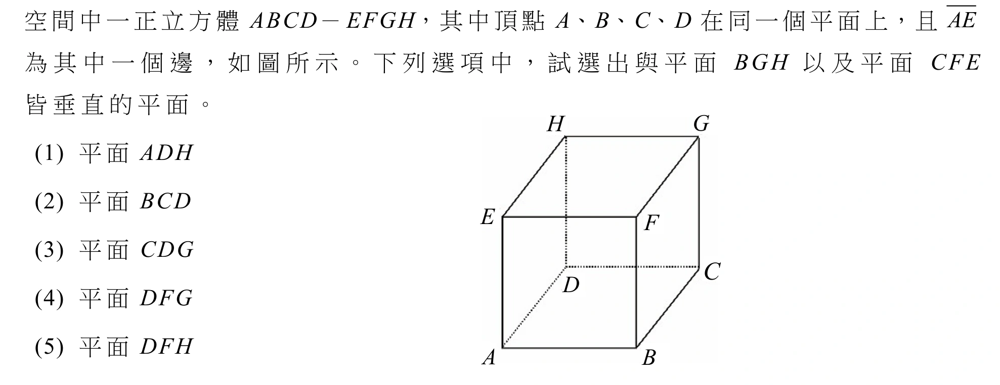
答案
(1)
詳解
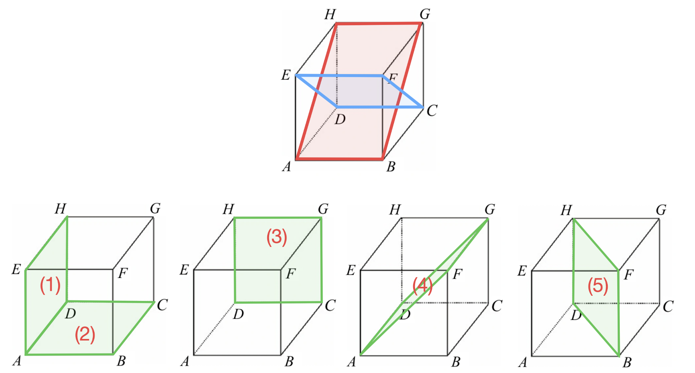
3.
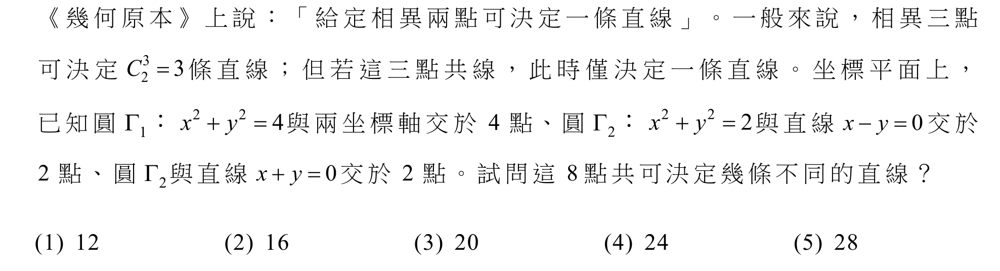
答案
(3)
詳解
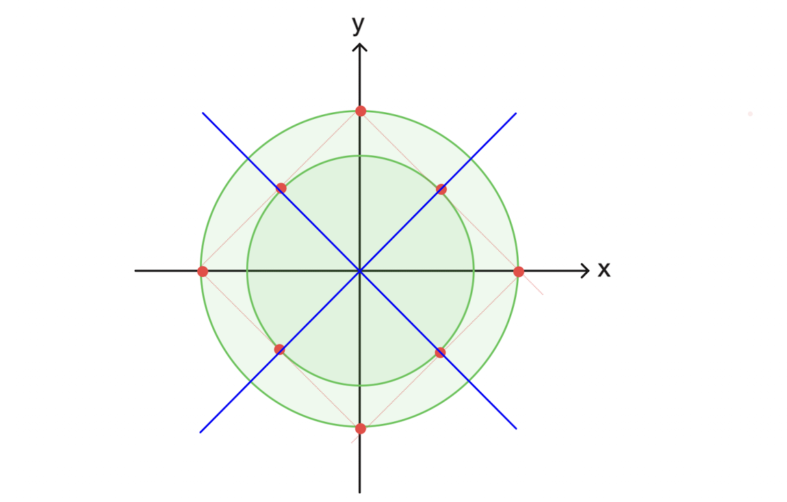
如圖，有 4 組三點共線(可利用等腰直角三角形斜邊上的高恰等於 \(\sqrt2\) 證明共線)
\(C^8_2-4C^3_2+4=20\)
二、多選題( 4 ~ 8 題)
4.
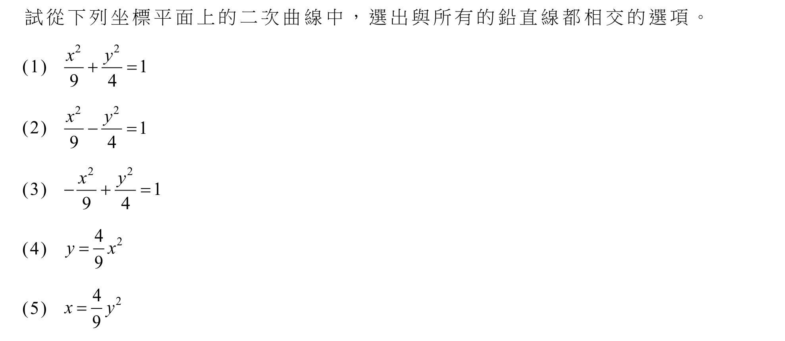
答案
(3)(4)
詳解
與所有鉛直線相交的圖形 \(\Rightarrow\) 即左右無限延伸的圖形
(1) 橢圓 (圖形封閉)
(2) 左右雙曲線 (中間有空隙)
(3) 上下雙曲線
(4) 向上抛物線
(5) 向右抛物線 (左邊沒有)
5.
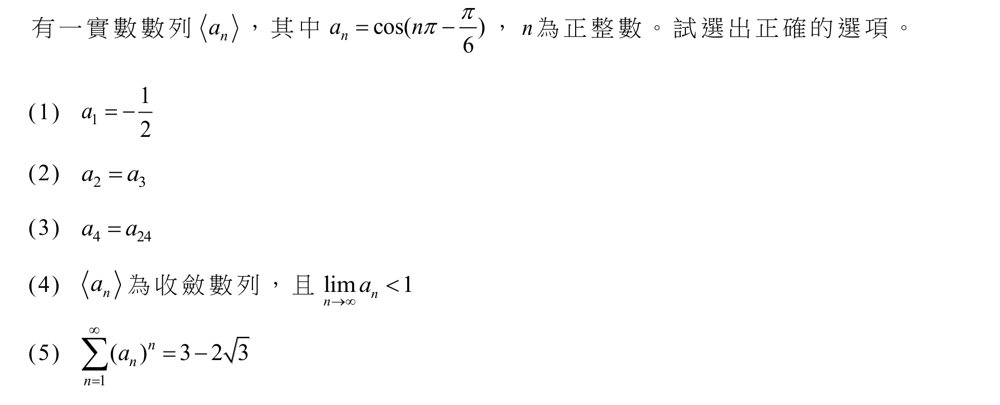
答案
(3)(5)
詳解
(1)
\(\quad\) \(a_1=\cos(\pi-\frac{\pi}{6})=\cos\frac{5\pi}{6}=-\frac{\sqrt3}{2}\)
(2)
\(\quad\) \(a_2=\cos(2\pi-\frac{\pi}{6})=\cos\frac{\pi}{6}\)
\(\quad\) \(a_3=\cos(3\pi-\frac{\pi}{6})=\cos\frac{5\pi}{6}=-\cos\frac{\pi}{6}\neq
a_2\)
(3)
\(\quad\) \(a_4=\cos(4\pi-\frac{\pi}{6})=\cos(2\pi-\frac{\pi}{6})=a_2\)
\(\quad\) \(a_{24}=\cos(24\pi-\frac{\pi}{6})=\cos(2\pi-\frac{\pi}{6})=a_2\)
\(\quad\) \(\therefore n\) 為偶數時，皆為同界角。
(4)
\(\quad\) \(<a_n>: -\frac{\sqrt3}{2}, \frac{\sqrt3}{2},
-\frac{\sqrt3}{2}, \frac{\sqrt3}{2}, ...\) 為發散數列
(5)
\(\quad\) 原式\(=-\frac{\sqrt3}{2}+(-\frac{\sqrt3}{2})^2+(-\frac{\sqrt3}{2})^3+...\)
為公比\(=-\frac{\sqrt3}{2}\)
的等比級數
\(\quad\) \(=\lim\limits_{n \to \infty}
\frac{(-\frac{\sqrt3}{2})[1-(-\frac{\sqrt3}{2})^n]}{1-(-\frac{\sqrt3}{2})}\)
\(\quad\) \(=\frac{(-\frac{\sqrt3}{2})}{1-(-\frac{\sqrt3}{2})}\)
\(\quad\) \(=\frac{(-\frac{\sqrt3}{2})}{\frac{2+\sqrt3}{2}}\)
\(\quad\) \(=(-\sqrt3)(2-\sqrt3)\)
\(\quad\) \(=3-2\sqrt3\)
6.
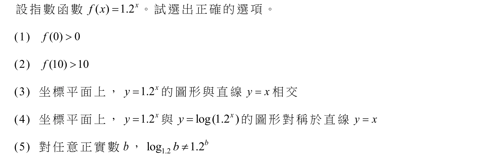
答案
(1)(3)
詳解
(1)
\(\quad\) \(f(0)=1.2^0=1>0\)
(2)
\(\quad\) \(f(10)=1.2^{10}\)
\(\quad\log 1.2^{10}=10(\log
\frac{12}{10})=10(\log 12 -\log 10)=10(2\log 2+\log3-1)\approx
0.791\)
\(\quad\Rightarrow 1.2^{10}=10^{0.791} <
10^1\)
\(\quad\Rightarrow f(10) <
10\)
(3)
\(\quad\) 設 \(g(x)=x\)
\(\quad\) 由 (2) 得 \(f(10) < 10=g(10)\)
\(\quad\) 且 \(f(0)=1>g(0)=0\)
\(\quad\) 一正一負，在 \(0 < x<10\) 之間必有交點
(4)
\(\quad\) 設 \(h(x)=\log 1.2^x\)
\(\quad\) 由 (2) 得 \(h(10)=0.791\)
\(\quad\) 但 \(f(0.791)=1.2^{0.791}\neq 10\) 所以不對稱於
\(y=x\)
(5)
\(\quad\) 換底 \(k(b)=\log_{1.2}b=\frac{\log b}{\log
1.2}\)
\(\quad\) 由 (2) 得 \(f(10) < 10\)
\(\quad k(10)=\frac{1}{\log
1.2}=\frac{1}{0.0791} > 10\)
\(\quad \Rightarrow
k(10)>f(10)\)
\(\quad\) 又 \(k(1)=0 <f(1)=1.2\)
\(\quad\) 一正一負，在 \(1 < b <10\) 之間必有交點
💡 提示： 盡量引用前面選項內容
7.
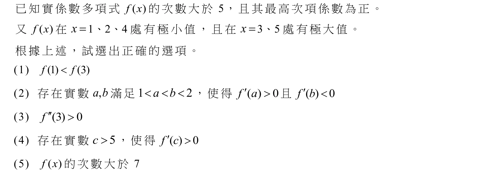
答案
(2)(4)(5)
詳解
(1) 極值只相對於附近的點，不代表極大值會大於極小值
(2) 連續函數兩極小值中間必有極大值
\(\quad\) 所以 \(1<x<2\) 之間圖形遞增後遞減，存在
\(f'(a)>0,
f'(b)<0\)
(3) 極大值凹向下，\(f''(3)<0\)
(4) 最高次項係數為正，表示圖形最右邊遞增
\(\quad\) 存在 \(f'(c)>0\)
(5) 至少有 7 個極值（題目給 5 個，\(1<x<2, x>5\)）
\(\quad\) \(f'(x)=0\) 至少有 7 個根，所以 \(f(x)\) 至少 8 次
8.
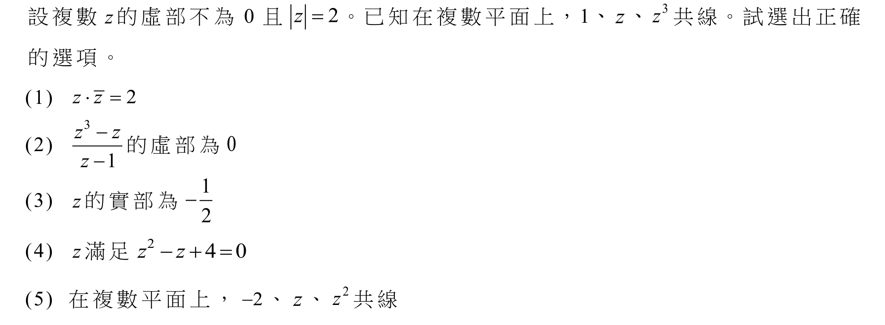
答案
(2)(3)(5)
詳解
設 \(z=2\cos\theta+2i\sin\theta\)
\(|z|=2\Rightarrow a^2+b^2=4\)
(1)
\(\quad\) \(z\cdot \overline
z=(2\cos\theta+2i\sin\theta)(2\cos\theta-2i\sin\theta)=4(\cos^2\theta+\sin^2\theta)=4\)
(2)
\(\quad\) 共線 \(\Rightarrow\) 向量成比例
\(\quad\) \(\frac{z^3-z}{z-1}=t, t\in R \Rightarrow\)
虛部為 \(0\)
(3)
\(\quad\) 由(2) \(\frac{z^3-z}{z-1}=z^2+z=4\cos2\theta+4i\sin2\theta+2\cos\theta+2i\sin\theta\)
\(\quad\) 虛部 \(=0\Rightarrow
4\sin2\theta+2\sin\theta=0\)
\(\quad\) \(\Rightarrow
8\sin\theta\cos\theta+2\sin\theta=0\)
\(\quad\) \(\Rightarrow
2\sin\theta(4\cos\theta+1)=0\)
\(\quad\) 因為 \(z\) 的虛部不為 \(0\Rightarrow \sin\theta\neq 0\)
\(\quad\) \(\Rightarrow 4\cos\theta+1=0 \Rightarrow
\cos\theta=-\frac14\)
\(\quad\) \(\Rightarrow z\) 的實部 \(2\cos\theta=-\frac12\)
(4)
\(\quad\) 根的公式：\(z=\frac{1\pm\sqrt{17}}{2}\)
\(\quad\) 實部不合
(5)
\(\quad\) \(\frac{z^2-z}{z+2}=\frac{8\cos^2\theta-4+8i\sin\theta\cos\theta-2\cos\theta-2i\sin\theta}{2\cos\theta+2i\sin\theta+2}\)
\(\quad\) 由(3) \(\cos\theta=-\frac14\) 代入
\(\quad\) \(\Rightarrow
\frac{\frac12-4-2i\sin\theta+\frac12-2i\sin\theta}{-\frac12+2i\sin\theta+2}\)
\(\quad\) \(=\frac{-4i\sin\theta-3}{2i\sin\theta+\frac32}\)
\(\quad\) \(=\frac{-8i\sin\theta-6}{4i\sin\theta+3}\)
\(\quad\) \(=-2\in R \Rightarrow\) 共線
三、選填題( 9 ~ 11 題)
9.
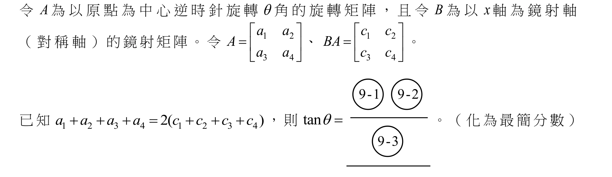
答案
\(-\frac12\)
詳解
\(A=\left [ \begin{matrix} \cos\theta& -\sin\theta \\ \sin\theta& \cos\theta \\ \end{matrix} \right ]\)
\(B=\left [ \begin{matrix} 1& 0 \\ 0& -1 \\ \end{matrix} \right ]\)
\(BA=\left [ \begin{matrix} \cos\theta& -\sin\theta \\ -\sin\theta& -\cos\theta \\ \end{matrix} \right ]\)
\(a_1+a_2+a_3+a_4=2(c_1+c_2+c_3+c4)\)
\(\Rightarrow
\cos\theta-\sin\theta+\sin\theta+\cos\theta=2(\cos\theta-\sin\theta-\sin\theta-\cos\theta)\)
\(\Rightarrow
4\sin\theta+2\cos\theta=0\)
\(\Rightarrow
\frac{\sin\theta}{\cos\theta}=-\frac12=\tan\theta\)
10.
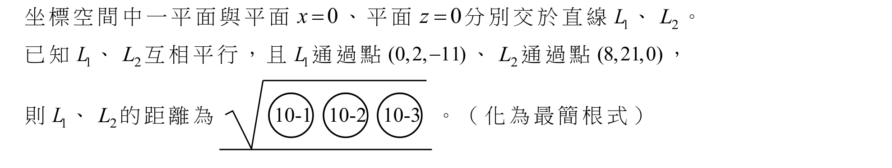
答案
\(\sqrt{185}\)
詳解
設 \(A(0, 2, -11), B(8, 21,
0)\)
\(L_1, L_2\) 皆平行 \(y\) 軸
\(d(L_1, y\) 軸\()=d(A, y\) 軸\()=11\)
\(d(L_2, y\)軸\()=d(B, y\) 軸\()=8\)
\(\Rightarrow d(L_1,
L_2)=\sqrt{(11-8)^2+(0-21)^2}=\sqrt{185}\)
11.
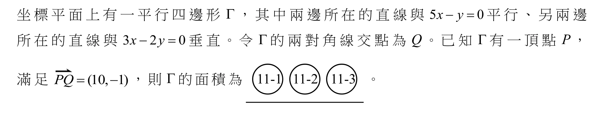
答案
204
詳解
兩鄰邊的方向向量分別為 \((1, 5), (3,
-2)\)
對角線向量為 \(2\overset{\rightharpoonup}{PQ}
= (20, -2)\)
設 \(a(1,5)+b(3,-2)=(20, -2)\)
\(\Rightarrow \begin{cases} a + 3b = 20 \\ 5a
- 2b = -2 \end{cases}\)
\(\Rightarrow a=2, b=6\)
兩鄰邊的向量分別為 \((2, 10), (18,
-12)\)
\(\Rightarrow\) 面積 \(=|2\times(-12)-10\times18|=204\)
第 貳 部 分 、 混 合 題 或 非 選 擇 題
12 ~ 14 題組
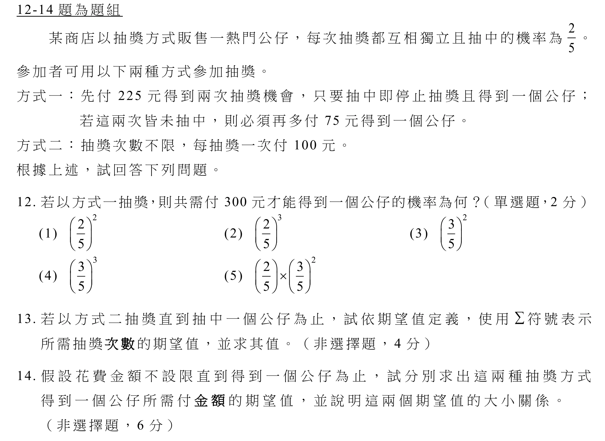
答案
- (3)
- \(\frac52\)
- 方式一：252
方式二：250
詳解
兩次都沒抽中：\(\frac35\times\frac35=(\frac35)^2\)
\(1\times\frac25+2\times\frac35\times\frac25+3\times(\frac35)^2\times\frac25+......\)
\(=\sum\limits_{k=1}^{\infty} k(\frac35)^{k-1}\times\frac25\)
此為幾何分布的期望值\(=\frac{1}{\frac25}=\frac52\)方式一期望值\(=225\times\frac25+225\times\frac35\times\frac25+(225+75)\times(\frac35)^2=252\)
方式二期望值\(=100\times\frac52=250\)
\(\Rightarrow\) 方式一的期望值 \(>\) 方式二的期望值
15 ~ 17 題組
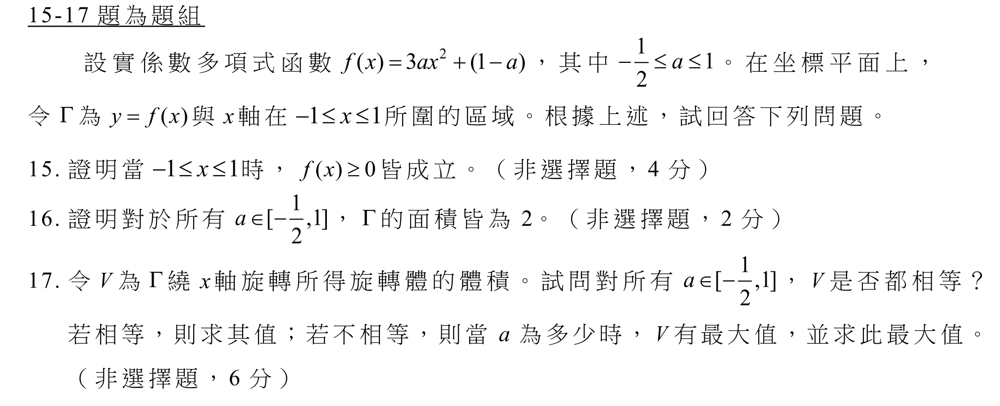
答案
見詳解
17. \(a=1, V=\frac{18}{5}\pi\)
詳解
\(-1\leq x \leq 1\Rightarrow 0\leq x^2 \leq 1\)
分段討論：
(1) \(0\leq a \leq 1\)
\(\quad\Rightarrow 0\leq 3ax^2\leq 3a\)
\(\quad\Rightarrow 1-a\leq 3ax^2+(1-a)\leq 2a+1\)
\(\quad\Rightarrow 0\leq 3ax^2+(1-a)\leq 3\)
(2) \(-\frac12\leq a< 0\)
\(\quad\Rightarrow 3a\leq 3ax^2\leq 0\)
\(\quad\Rightarrow 2a+1\leq 3ax^2+(1-a)\leq 1-a\)
\(\quad\Rightarrow 0\leq 3ax^2+(1-a)\leq -\frac32\)
由(1) 和 (2) 可知 \(f(x)\geq 0\) 皆成立\(\int_{-1}^{1} f(x) dx=[ax^3+(1-a)x]|_{-1}^{1}=[a+(1-a)]-[a-(1-a)]=2\)
\(V=\int_{-1}^{1} \pi(f(x))^2 dx\)
\(=\int_{-1}^{1} \pi(3ax^2+(1-a))^2 dx\)
\(=\int_{-1}^{1} \pi(9a^2x^4+6a(1-a)x^2+(1-a)^2) dx\)
\(=\pi[\frac{9a^2}{5}x^5+2a(1-a)x^3+(1-a)^2x]|_{-1}^{1}\)
\(=\pi[\frac{9}{5}a^2+2a(1-a)+(1-a)^2+\frac{9}{5}a^2+2a(1-a)+(1-a)^2]\)
\(=\pi(\frac{8}{5}a^2+2)\)
\(\Rightarrow\) 當 \(a=1\) 時，\(V\) 有最大值為 \(\frac{18}{5}\pi\)